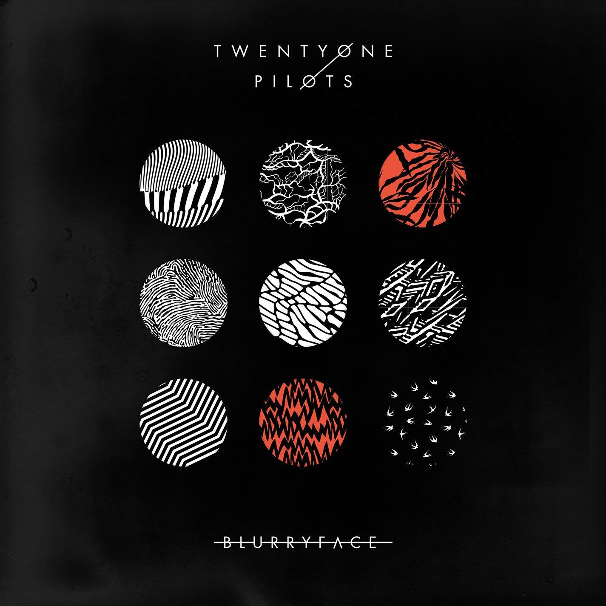

Es el cuarto álbum musical del dúo estadounidense Twenty One Pilots. Es el segundo álbum de estudio de la banda grabado y lanzado mediante Fueled by Ramen??. Originalmente iba a ser lanzado el 19 de mayo de 2015, pero fue lanzado 2 días antes, el 17 de mayo, mediante iTunes. El álbum contiene el primer sencillo titulado "Fairly Local", lanzado el 17 de marzo de 2015 para promocionarlo. A partir de marzo de 2016, el álbum ha vendido un millón de copias en los Estados Unidos. Este también contiene el Billboard Top-Five Single, "Stressed Out", que alcanzó el puesto número 2 en febrero de 2016. Blurryface cambió mucho respecto al álbum anterior, éste teniendo elementos del Hip hop, Drum and bass, Reggae, Breakbeat y, en canciones como "We Don't Believe What's on TV" y "The Judge", algunos elementos del folk.
El álbum lleva el nombre de un personaje que la banda llamó Blurryface. Según Tyler, "Representa todas las cosas, que yo soy como individuo, y las personas a mi alrededor, y mis miedos e inseguridades ". Joseph también mencionó que la pintura negra de las manos y el cuello que lleva en sus shows en vivo, y en los videos musicales del álbum, representan a Blurryface, diciendo: "La pintura en las manos representa mi inseguridad y miedo a equivocarme al escribir las canciones, la pintura en el cuello representa la inseguridad al cantarlas.".
